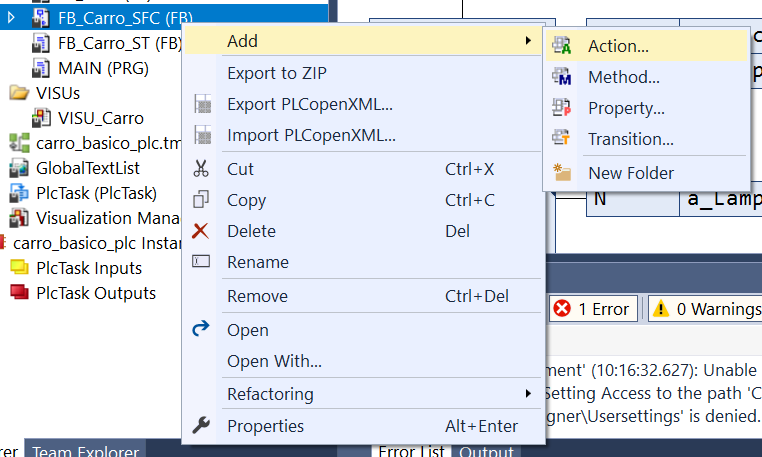
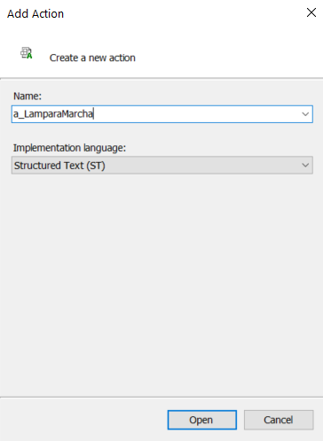
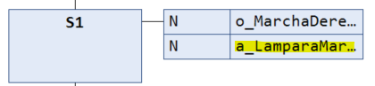
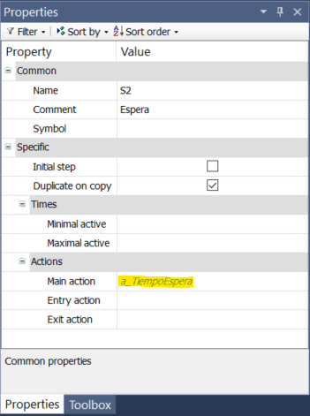
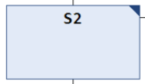

🅰️ Lenguajes de implementación¶
📄 Lenguaje ST¶
Recomendación
Es recomendable acceder a la ayuda y documentación del lenguaje ST (Structured Text) que ofrece Beckhoff en su portal Infosys.
Sintaxis general¶
- Las instrucciones deben terminar con
;. - Los comentarios se pueden realizar con
//hasta final de línea o metiendo el texto entre(*y*). - La asignación de valores entre variables se realiza con el operador
:=. - La comparación de valores se realiza con los operadores
=,<>,<=,>=. - Las operaciones lógicas se realizan con los operadores
AND,ORyNOT. - La llamada a los FBs se realiza escribiendo el nombre de la instancia del FB seguido de, entre paréntesis, las asignaciones de los valores para las variables de entrada (si las hay), separadas por comas:
<nombre_instancia>(var1:=val1, var2:=val2, ...); -
En caso de que no haya ninguna variable de entrada que especificar, simplemente se abre y se cierra paréntesis.
Ejemplo
Estacion();Lampara(TiempoEncedido:=T#2s);
Estructuras de control¶
- Las estructuras de control básicas son:
- Condicionales (
if,case)IF <condition> THEN <statements> ELSIF <condition> THEN <statements> ELSE <statements> END_IF; CASE <expression> OF <value>, <value>, …, <value>: <statements> ELSE <statements> END_CASE; - Bucles (
for,while,repeat)FOR <variable> := <expression> TO <expression> BY <expression> DO <statements> END_FOR; WHILE <condition> DO <statements> END_WHILE; REPEAT <statement> UNTIL <condition> END_REPEAT;
- Condicionales (
⤵️ Lenguaje SFC¶
Reglas sintácticas¶
- Los nombres de las etapas en SFC (Sequential Function Chart) no pueden empezar por un número. Tampoco pueden tener espacios, puntos u otros caracteres especiales como eñes, interrogaciones, etc. Sí permite guiones bajos.
- No puede haber dos etapas consecutivas ni dos transiciones consecutivas. Hay que tener especial atención a esto cuando se produzcan bifurcaciones o saltos.
Añadir etapa / transición¶
- Hacer CD sobre la etapa donde queramos introducir una nueva y seleccionar Add step-transition o Add step-transition after, dependiendo de si queremos añadirla antes o después, respectivamente, de la etapa seleccionada.
Importante
Comprobar que no quedan dos etapas o dos transiciones consecutivas. En caso contrario, borrar aquello que no sirva (CI sobre él y pulsar Supr).
Asociar acciones a etapas¶
Acción continua¶
Las acciones continuas se ejecutan de manera continuada mientras el sistema está en la etapa asociada. Esto nos va a permitir:
- Activar una señal booleana durante todo el tiempo que la etapa esté activa.
- Ejecutar una acción condicionada asociada a la etapa, es decir, queremos activar una señal en esta etapa condicionada a que una expresión lógica sea verdadera.
El procedimiento para su creación es el siguiente:
- Hacer CD sobre la etapa a la que queramos asociar una acción no memorizada (o continua) y seleccionar Insert action association o Insert action association after, dependiendo de si queremos insertarla antes o después de las ya existentes (si las hay).
- En la caja de la acción aparece en primer lugar el modificador (por defecto
N, que significa "No memorizada") y en segundo lugar el hueco donde debemos poner la acción a realizar.
Señal booleana¶
Si queremos activar una señal booleana, bastará con escribir su nombre en la caja de acción.

Existen varios tipos de modificadores de acciones:
| Código | Tipo | Descripción |
|---|---|---|
N |
No memorizada (continua) | Se ejecuta/activa mientras la etapa esté activa. |
R0 |
Reinicio | La acción se desactiva. |
S0 |
Activación | Se ejecuta cuando se activa la etapa y continúa activa aunque la etapa se desactive. |
L |
Limitada | Se ejecuta cuando se activa la etapa y se desactiva cuando la etapa se desactiva o se alcanza el tiempo especificado. |
D |
Retrasada | Se ejecuta un tiempo después de que se active la etapa y se desactiva cuando la etapa se desactiva. |
P |
Pulsada | Se ejecuta dos veces: cuando se activa la etapa y una vez más en el ciclo siguiente. |
SD |
Activación con retardo | Se activa aunque la etapa ya no esté activa. |
DS |
Retardo de activación | Se activa solo si la etapa permanece activa. |
SL |
Activación limitada | Activación con duración limitada. |
Importante
Usaremos, por defecto, las acciones no memorizadas, aunque se pueden usar las otras si tiene sentido para el proyecto.
Acción condicionada¶
Si, por el contrario, lo que queremos asociar a esta etapa es una acción condicionada, tendremos que realizar el siguiente procedimiento:
-
Añadir una acción haciendo CD sobre el FB donde queremos usar la acción y seleccionar
Add > Action...
-
Especificar el nombre de la acción que queramos y seleccionar el lenguaje en el que la vamos a implementar (
SThabitualmente).
Sugerencia
En nuestro trabajo tomaremos la convención de añadir el prefijo
a_a las acciones que creemos de este modo. -
Escribir el código de la acción, como por ejemplo:
BLK(); o_LamparaMarcha := (S0.x AND BLK.Q) OR NOT S0.x; // acción condicionada que enciende la lámpara -
Asociarlo a una etapa en la caja de acción contínua.

-
A partir de este momento, el código de la acción se ejecutará de manera continua (en cada ciclo básico del PLC) mientras la etapa asociada esté activa.
Acción memorizada¶
También podemos crear acciones memorizadas con activación a la entrada o a la salida de una etapa. Estas acciones se implementan en cualquiera de los lenguajes de la norma y permiten realizar acciones que se ejecutan solo una vez durante la etapa, en lugar de hacerse de manera continua. Se utilizan para establecer valores de variables, actualizar contadores, comprobaciones, etc.
A la entrada¶
- Las acciones con activación a la entrada se ejecutan solo una vez inmediatamente después de entrar en la etapa donde se asocian. Posteriormente se comprueba si la condición de transición para pasar a la siguiente etapa es cierta o no.
- Normalmente usaremos estas acciones para inicializar variables memorizadas, actualizar contadores, etc.
- Para crear una de este tipo, hacer CD sobre la etapa donde la queremos asociar y seleccionar Add entry action.
-
Aparece un popup donde se nos pregunta por el nombre que le queremos poner y el lenguaje a utilizar. Se recomienda dejar el nombre por defecto (
S0_entryen la figura) ya que nos indica en qué etapa está y de qué tipo es.
-
En nuestros proyectos, estas acciones siempre serán implementadas en
ST, pero podrían ser codificadas en cualquier otro lenguaje de la norma. -
Una vez creada, se representa en el programa
SFCcomo un cuadrado con una E en la esquina inferior izquierda de la etapa.
A la salida¶
- Las acciones con activación a la salida se ejecutan solo una vez inmediatamente antes de pasar a la siguiente etapa. Esto implica que antes de que se ejecute esta acción, la condición de transición para pasar a la siguiente etapa debe ser cierta.
- Normalmente usaremos estas acciones para inicializar variables memorizadas, actualizar contadores, etc.
- Para crear una de este tipo, hacer CD sobre la etapa donde la queremos asociar y seleccionar Add exit action.
-
Aparece un popup donde se nos pregunta por el nombre que le queremos poner y el lenguaje a utilizar. Se recomienda dejar el nombre por defecto (
S0_exiten la figura) ya que nos indica en qué etapa está y de qué tipo es.
Importante
En nuestros proyectos, estas acciones siempre serán en
ST, pero podrían ser implementadas en cualquier otro lenguaje de la norma. -
Una vez creada, se representa en el programa
SFCcomo un cuadrado con una X en la esquina inferior derecha de la etapa.

Importante
Nada impide que una etapa tenga asociadas una o varias acciones no memorizadas, una con activación a la entrada y otra con activación a la salida.
Acción principal¶
Existe un cuarto tipo de acciones que podemos utilizar: las acciones principales. Estas acciones también se asocian a una etapa y se ejecutan de manera continua durante todo el tiempo que la etapa esté activa.
El procedimiento de creación de estas acciones es el mismo que el indicado aquí pero, en lugar de introducir el nombre de la acción en la caja de acción, lo introduciremos en el campo Main Action dentro de las propiedades de la etapa.

Una vez asociada a la etapa, aparece representada en el diagrama SFC con un triángulo oscuro en la esquina superior derecha de la misma.

Importante
Conceptualmente no hay diferencia sustancial con las acciones condicionadas utilizadas en las cajas de acción, pero tomaremos la convención de utilizar este tipo de acciones cuando las variables involucradas no estén relacionadas con las E/S hardware de nuestro sistema y las acciones condicionadas en caso contrario.
Estructuras de evolución¶
Secuencia básica¶
-
Una secuencia básica se compone de una sucesión lineal de etapas y transiciones, donde las primeras se van a ir ejecutando en secuencia conforme las condiciones asociadas a las segundas se vayan cumpliendo.
-
Normalmente, al final de la secuencia se producirá un salto hacia atrás (o el inicio) en el programa.

-
Para insertar un salto detrás de una transición, hay que hacer CD sobre la transición y seleccionar Insert jump after. Solo hay que indicar el nombre de la etapa a la que queremos saltar.
Bifurcación¶
-
Tras una etapa podemos realizar una bifurcación en distintas ramas en función de distintas condiciones. Esto nos permite dirigir la secuencia por un camino si ocurre un evento y por otros distintos si ocurren otros eventos.
-
En el ejemplo de la figura, si la etapa
Initestá activa y se activaExecute, el programa evolucionará por la rama de la izquierda llegando aS0. Si lo que se activa esRestore, el programa evolucionará por la derecha pasando aSry, una vez se activeRestaurado, la secuencia pasará aS0.
-
Para realizar una bifurcación, hacer CD sobre la transición donde se quiera hacer la bifurcación (
Executeen el ejemplo) y seleccionar Insert branch right. -
Nada impide que se pueda hacer una bifurcación con más de dos ramas.
-
Es recomendable que las condiciones de la bifurcación sean excluyentes pero nada impide que no lo sean. El programa tomará el camino de la primera transición cuya condición sea verdadera de izquierda a derecha.
-
Si ocurriera que varias o todas las condiciones son verdaderas a la vez, el programa evolucionará por la rama de la izquierda. Aunque esto puede ser útil en algunos casos, esto suele indicar que hay un mal diseño en el programa.
Paralelismo¶
-
Si queremos que el programa evolucione por dos secuencias en paralelo (se ejecutan simultáneamente) podemos incluir un paralelismo en el código.
-
En el ejemplo de la figura, si la etapa
Initestá activa y se activaExecute, el programa evolucionará por ambas ramas a la vez, activando los estadosS0ySrde manera simultánea (y por tanto,LuzRojayRestaura).
-
En la transición con condición
NOT Pulsador OR S0.t>T#5sse produce un punto de sincronización ya que, para que el programa evolucione aS1debe ocurrir queS0ySr2estén activas y, además, que la condiciónNOT Pulsador OR S0.t>T#5ssea cierta. Por tanto, podemos decir que el programa esperará hasta que termine la rama de la derecha antes de evolucionar.